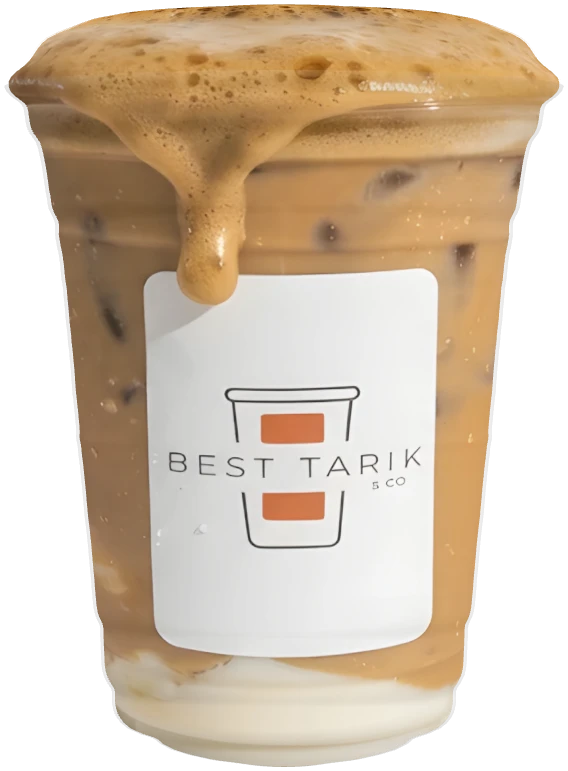

Johor Bahru · @besttarik.co
Pulled teh tarik over silky soy beancurd, crowned with a different cream in every cup. Five ways to sip, made in Johor Bahru.
Best Tarik & Co began in Johor, Malaysia with one idea: give the traditional Malaysian teh tarik a fresh, creative twist. By pairing familiar local flavours with unexpected ingredients, we want to offer a new way to enjoy a classic everyone already loves.
Our signature brings two old favourites together. The rich, comforting taste of teh tarik meets the soft, silky texture of taufufah, the soy pudding many of us grew up with. One cup that is part local drink, part traditional dessert.

Each flavour lives on top: pulled tea froth, salted coffee cream, matcha, taro or jasmine sea-salt, poured until it spills over the rim.
Strong, milky pulled tea runs through every cup. It is the one thing every flavour shares.
Silky taufufah waits at the bottom. Stir it through, or save it for the last sip.
Same teh tarik, same taufufah, a different crown each time. Tap a cup to see it in 3D at the top of the page.
Every brand has a beginning. Ours reflects the spirit of local entrepreneurship: a creative take on Malaysian teh tarik, brought to the streets of Johor.
It started small, with a pop-up stall and a new idea for an old favourite.
The signature pairing: something familiar, served in a way people did not expect.
Through pop-ups and new drink creations, Best Tarik found its way into the local community.
Premium, Cham and Matcha came first. Taro followed, then Jasmine Seasalt.
Every milestone is another step on the journey, and the next chapter is still being poured.
One cup at a time.